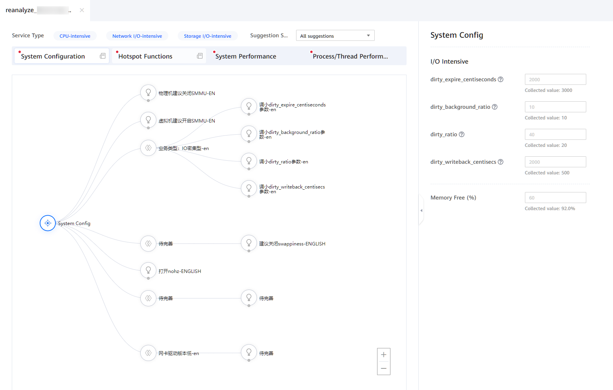
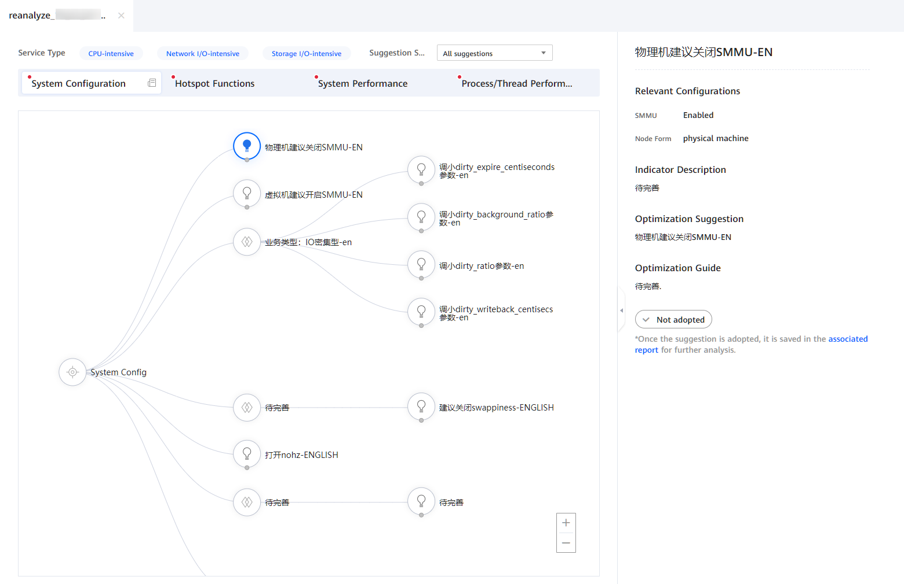
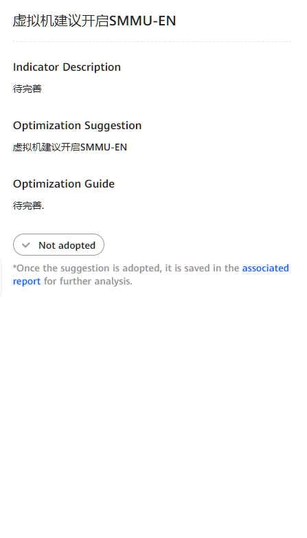

Prerequisites
An analysis task has been created and the analysis is complete.
Procedure
- In the Project Management area, click
 before the target project and analysis task.
before the target project and analysis task.The node list is displayed.
- Click the name of the target node to view the analysis result.
The analysis result page is displayed, which involves four parts: System Configuration, Hotspot Functions, System Performance, and Process/Thread Performance. By default, System Configuration is displayed.
Figure 1 Analysis result page
- (Optional) Select one or more service types.
- Select the service type as required. Possible options are CPU-intensive, Network I/O-intensive, or Storage I/O-intensive. You can select one to three service types. The text color of the selected options changes to blue. By default, all the three options are selected.
- Select the suggestion scope based on the actual situation. You can adjust the topology tree by selecting All suggestions or Threshold-filtered suggestions.Figure 2 Selecting service types

- Set tuning parameters based on the system configuration conditions.
- You can adjust the System Config parameters on the right based on the system configuration.Figure 3 System Config tuning parameters
Table 1 describes the parameters related to the System Config.Table 1 System Config parameters Parameter
Description
dirty_expire_centiseconds
Specifies how long dirty data stays in the cache before written into the drives. If service data is written continuously, set this parameter to a smaller value to prevent burst I/O waiting caused by centralized I/Os.
dirty_background_ratio
Specifies the maximum percentage of pages to the total memory before the dirty pages are written to drive by the pdflush process (based on memfree + Cached - Mapped). Increasing the value of this parameter will allocate more memory for the write cache, thereby improving the drive write performance. However, for services that mainly involve drive write operations, set this parameter to a smaller value to prevent data from being stacked and causing performance bottlenecks. You can observe the time fluctuation range of await and the feature of the service for identification.
dirty_ratio
Specifies the maximum ratio of dirty pages to the total memory. If the ratio exceeds the value, the system does not add dirty pages and the file read and write operations change to the synchronous mode. After the file read and write operations change to the synchronous mode, the block time of the file read and write operations of the application becomes longer, which slows down the system. For write-intensive services, you can increase the value of this parameter to prevent the drive from entering the synchronous write state too early.
dirty_expire_centisecs
Specifies the interval of the pdflush process for refreshing the dirty data of the kernel, in 1/100s. The default value is 500 (5 seconds).
- If the system writes data continuously, decrease the value of this parameter. In this way, intensive write operations can be split into multiple write operations.
- If the system performs intensive write operations in a short period of time and the data volume is not large (dozens of MB each time) and the memory is sufficient, increase the value of this parameter.
Memory Idle Rate (%)
Specifies the memory usage.
- When the memory usage is too high, the server performance deteriorates. In this case, you need to increase the memory idle rate to ensure the normal running of the server.
- When the memory usage is low, decrease the value of swappiness to use the physical memory and reduce the usage of the swap partition. This prevents system performance from being affected by increased I/O operations.
swappiness
swappiness is a Linux kernel attribute that sets the balance between swapping pages from the physical memory to the swap space and removing pages from the page cache. It basically defines the frequency at which the system uses the swap space.
- Click Apply and make the modified configuration parameters take effect.
- Click Reset to restore the default parameter configurations.
- View the tuning suggestion topology tree on the analysis result page. Click
 and
and  to select the corresponding tuning suggestions based on the configuration conditions.Figure 4 Tuning suggestion topology tree
to select the corresponding tuning suggestions based on the configuration conditions.Figure 4 Tuning suggestion topology tree
 - View the Relevant Configurations, Indicator Description, Optimization Suggestion, and Optimization Guide on the right. Click
 to adopt the tuning suggestion, or cancel the adoption of the tuning suggestion by clicking it again.Figure 5 Tuning suggestion page
to adopt the tuning suggestion, or cancel the adoption of the tuning suggestion by clicking it again.Figure 5 Tuning suggestion page
 - The adopted tuning suggestions are saved in the associated report. Click the associated report in the lower right corner of the page to access the associated report page.
All adopted tuning suggestions are displayed on the associated report page. You can click the task name to view the details. Click Valid or Invalid in the lower left corner to check whether the tuning suggestion meets the expectation.
Figure 6 Associated report
- You can adjust the System Config parameters on the right based on the system configuration.
- Click
 on the right of System Configuration to view system configuration data.
on the right of System Configuration to view system configuration data.The system configuration details include the CPU, memory, storage, network, and OS configuration information. By default, the CPU tab page is displayed.
Figure 7 Viewing system configuration data